Rama kompetencyjno-operacyjna do funkcjonowania w świecie zmienności.
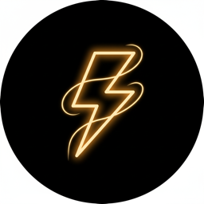
Tempo decyzji i działania
Szybkie reagowanie i podejmowanie decyzji w warunkach niepewności.
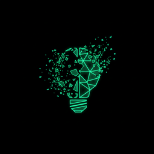
Uczenie się i aktualizacja
Świadome porzucanie przestarzałych modeli mentalnych.
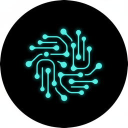
Współpraca i przepływ
Płynność struktur, ról i przepływu wiedzy. Bezpieczeństwo psychologiczne.
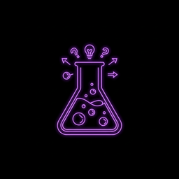
Eksperymentowanie
Systematyczne testowanie hipotez, uczenie się z błędów.
Filtruj scenariusze po roli, branży, sytuacji i typie wyzwania.
Obszar FLUX
Branża
Rola / Stanowisko
Sytuacja
Kontekst życiowy
Typ wyzwania
Trendy wg horyzontu czasowego i obszaru FLUX.
Evidence-based: badania naukowe stojące za modelem FLUX.
Gotowe klocki: checklisty, canvasy, prompty, diagnostyki.
Oceń swoje kompetencje w 4 obszarach FLUX (skala 1-5).
Zaplanuj konkretne działania z deadlinami i metrykami sukcesu.
Panel trenera: QR code, diagnostyki, gap analysis.
Włączaj i wyłączaj funkcje aplikacji wg potrzeb.
Trener · Konsultant · Coach · Psycholog
Trener i konsultant z ponad 10-letnim doświadczeniem w obszarze szkoleń i rozwoju (L&D). Wcześniej pracował bezpośrednio w sprzedaży (m.in. Noble Bank), przeszedł pełną ścieżkę — od trenera wewnętrznego, przez L&D Experta i Senior Trenera Sprzedaży, po Kierownika Szkoleń.
Specjalizuje się w szkoleniach z zakresu psychologii sprzedaży, efektywności osobistej i zarządzania. Ponad 6 000 godzin pracy warsztatowej. Od 2023 roku szkoli działy sprzedaży z efektywnego użycia AI. Prowadzi szkolenia w języku polskim i angielskim.
Warsztat to żywy organizm. To, co dzieje się między ludźmi — dynamika, napięcia, energie — ma równie duże znaczenie jak treść merytoryczna. Poniżej kilka zasad, którymi kieruję się podczas pracy z grupą.
Podział na grupy i losowanie uczestników to nie tylko "kto z kim" — to świadoma interwencja w dynamikę grupy. Losowość rozbija nieformalne koalicje, wymusza nowe perspektywy i tworzy warunki do autentycznej współpracy.
Na każdym etapie warsztatu monitoruję poziom energii, napięcia i zaangażowania. Wiem, kiedy przyspieszyć, kiedy zwolnić — i kiedy potrzebny jest reset. Narzędzia jak losowanie czy koło fortuny pomagają zmieniać rytm i utrzymywać uwagę.
Grupy przechodzą przez przewidywalne fazy: forming → storming → norming → performing. Dobry trener nie omija "stormingu" — pomaga grupie przez niego przejść. Losuję, mieszam składy i prowokuję dialog właśnie wtedy, gdy jest to najbardziej potrzebne.
Paradoks procesu grupowego: im lepsza struktura, tym więcej swobody twórczej. Jasne zasady losowania, przejrzyste reguły gry i przewidywalny rytm dają uczestnikom poczucie bezpieczeństwa — i przestrzeń do autentycznego zaangażowania.
Dynamika grupy dzieje się zarówno w słowach, jak i między nimi. Obserwuję, kto milczy, kto dominuje, jakie nieformalne role się tworzą. Narzędzia losowania pomagają mi jako trenerowi — bez tłumaczenia się — zmienić układ sił i dać głos tym, którzy go nie zabierają.
7 głównych obszarów tematycznych, w których prowadzę szkolenia i warsztaty. Każdy temat adaptuję do poziomu grupy — od podstawowego po zaawansowany.
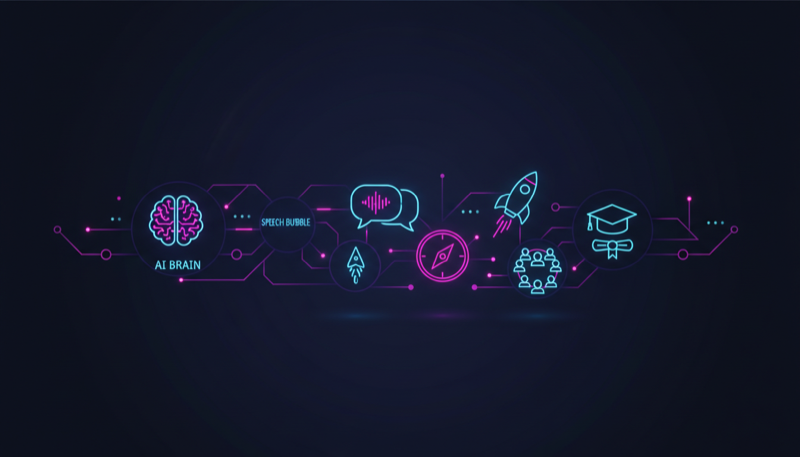
Od podstaw po zaawansowane wdrożenia. Prompt engineering, automatyzacja procesów, AI w sprzedaży i zarządzaniu.
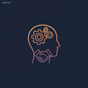
Challenger Sale, SPIN Selling, psychologia decyzji zakupowych, praca z oporem klienta.
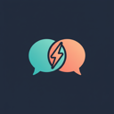
Feedback, NVC, prezentacje, storytelling, trudne rozmowy, asertywność.
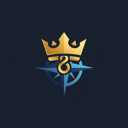
VUCA leadership, zarządzanie zespołem, delegowanie, motywowanie, zarządzanie zmianą.
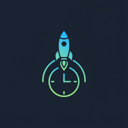
GTD, Deep Work, zarządzanie energią, priorytetyzacja, produktywność w erze AI.
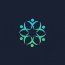
Dynamika grupowa, facylitacja, moderowanie dyskusji, zarządzanie konfliktem w grupie.
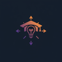
Projektowanie szkoleń (ROPES), metody aktywne, praca z energią grupy, ewaluacja.
Poniższy opis powstał na podstawie kilku badań psychometrycznych z ostatnich lat. To nie są wyniki testów — to obraz tego, jak naprawdę funkcjonuję, co mnie napędza i jak wchodzę w relacje. Warto to znać, żeby dobrze ze mną współpracować.
Potrzebuję wiedzieć, że moja praca ma znaczenie i jest dostrzegana. Status nie jest celem samym w sobie — to informacja zwrotna, że idę we właściwym kierunku.
Działam z poczuciem sensu. Muszę wierzyć, że to co robię zmienia coś na lepsze — u ludzi, w organizacji, w świecie.
Naturalnie przejmuję inicjatywę. Nie po to, by kontrolować — po to, by rzeczy się działy. Brak sprawczości działa na mnie demotywująco.
Potrzeba ciągłego uczenia się to mój motor. Nowe idee, nowe dziedziny, intelektualne dyskusje — to mnie ładuje, nie wyczerpuje.
Działam najlepiej pod presją i w zmiennym środowisku. Cisza i rutyna mnie nie relaksują — to wyzwania i złożone zadania dają mi energię.
Wychodzę z założenia, że ludzie są szczerzy i dobrzy w intencjach. Daję kredyt zaufania — i oczekuję tego samego.
Ciężko mi przejść obojętnie obok kogoś w potrzebie. Angażuję się w sprawy innych — to naturalne, nie wykalkulowane.
Nie uciekam od trudnych rozmów. Konfrontacja nie jest dla mnie zagrożeniem — to narzędzie do rozwiązywania problemów.
Szukam rozwiązań korzystnych dla obu stron. Praca zarówno samodzielna, jak i zespołowa przychodzi mi naturalnie.
Niekonwencjonalny, otwarty na nowe doświadczenia — w górnym percentylu populacji. Unikam rutyny, chętnie wchodzę w intelektualne spory i eksperymentuję. Wyróżnia mnie duża wrażliwość emocjonalna połączona z komfortem w trudnych sytuacjach.
Badanie OPTO (Master, 06.10.2025) mierzy 8 kluczowych wymiarów osobowości z punktu widzenia efektywności w pracy. Dwa dominujące obszary to Wpływ i Innowacyjność — co przekłada się na styl pracy: inicjatywa, perswazja, nieustanne kwestionowanie status quo i orientacja na cel maksymalny (10/10).
Bardzo wysoka asertywność (9/10) i komunikatywność (9/10) — naturalnie przejmuję inicjatywę, wiem jak zjednać sobie ludzi i jestem bardzo przekonujący. Pewność siebie w sytuacjach społecznych (8/10).
Najwyższy wynik w radzeniu sobie ze stresem (9/10) — zawsze zachowuję spokój pod presją, w stresie wykazuję się odpornością psychiczną. Opanowanie emocji w pracy (7/10).
Orientacja na cel na poziomie maksymalnym (10/10) — zawsze zdeterminowany do osiągania wyznaczonych celów, bardzo ambitny. Pracowitość i samodyscyplina (8/10).
Wysoka pomysłowość (9/10) — cały czas kwestionuję istniejący stan rzeczy, mam mnóstwo nowych pomysłów. Gotowość do podejmowania ryzyka i przedsiębiorczość (8/10).
Wysoka obowiązkowość (8/10) i szczerość (8/10) — zawsze dotrzymuję zobowiązań, można na mnie polegać. Organizacja pracy (7/10).
Bardzo wysoka otwartość i towarzyskość (9/10) — lubię pracować w zespole, łatwo nawiązuję rozmowy. Altruizm (6/10). Zaufanie do ludzi (5/10) — z natury weryfikuję intencje.
Ponad 10 lat pracy z organizacjami z różnych sektorów. Poniżej wybrane firmy i instytucje, z którymi współpracowałem.
FLUX — Interaktywna Mapa Kompetencji to rama kompetencyjno-operacyjna do funkcjonowania w świecie zmienności. Łączy 4 wymiary: FAST (tempo decyzji), LIQUID (współpraca), UNLEARN (oduczanie) i EXPERIMENT (eksperymentowanie) w interaktywny diagram z eksploratorem scenariuszy, trendów i narzędzi diagnostycznych.